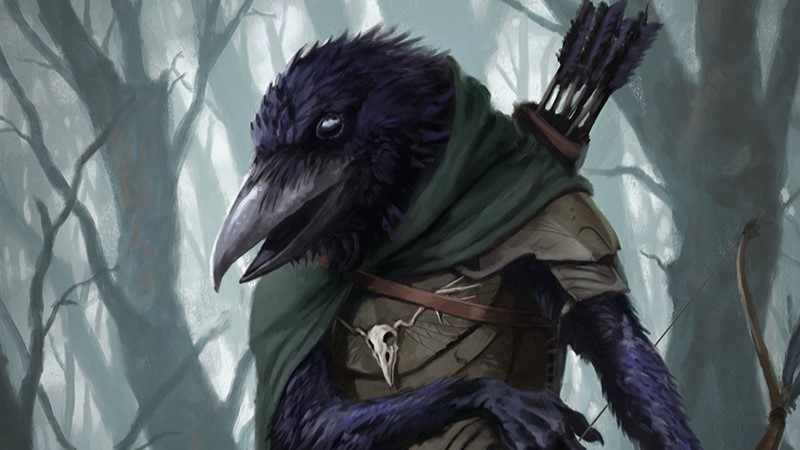

Mensch

Merkmale
Beschreibung
Die Menschen zählen zu den jüngsten Völker der Siebenlande, dennoch konnten sie sich innerhalb kürzester Zeit
zur vorherrschenden Macht des Kontinents aufschwingen. Obwohl ältere Völker sie gelegentlich als simpel und
unkultiviert abtun, sind Menschen äußerst anpassungs- und widerstandsfähig. Es gibt keine Umgebung, die sie
sich nicht zu Untertan machen können. Menschen sind ständig bestrebt, ihren Einfluss auszubreiten und
zählen Diplomatie wie Kriegsführung gleichermaßen zu ihrem Repertoir. Sie werden auch als das Beständige
Volk bezeichnet.
Volkseigenschaften
Menschliche Vielfalt
Du darfst bei der Charaktererstellung den Wert zweier beliebiger Attribute um +1 steigern. Zusätzlich darfst
du eine beliebige Fähigkeit um +2 steigern und erlangst Kompetenz in dieser
Fähigkeit. Außerdem kannst du
ein zusätzliches Talent wählen.
Varianten
Siebenländer
Siebenländer sind die Bewohner derjenigen sieben Nationen, die dem Kontinent seinen gemeinsprachlichen Namen
verschaffen. Dazu gehören die Königreiche Ausperlend, Ennelend, Kaukand, Padrinal, Tarvenien, die Bennetei,
sowie die Republik Merin.
Niedermarker
Malravier - oder Niedermarker, wie sie in der Gemeinsprache genannt werden - sind die Bewohner des
Großherzogtums Malravien, einer Grenzmark von Padrinal. Aufgrund ihrer gesonderten Lage besitzen sie eine
eigene Kultur und Sprache; Malravier sind stolz auf ihre Nationalidentität und zählen sich selbst nicht zu
den Siebenlanden.
Südländer
Die Migranten des Kontinents jenseits des Südmeeres stammen überwiegend aus dem Zauberreich Mesra, seltener
sogar aus den unerforschten Weiten hinter den Kona-Bergen. Viele sind Händler, die ihre Verbindungen zu den
hochkulturellen Südreichen spielen lassen, um Siebenländern billigen Tand zu überhöhten preisen anzubieten;
andere sind Söldner, die sich leichte Münze in vergleichsweise gefahrlosen Landen verdingen wollen; und
wenige sind einfach nur schaulustige Abenteurer, die sich von der rückständigen Kultur der nördlichen Reiche
selbst ein Bild machen wollen.
Satdit
Die Bewohner der Insel Satdial mögen den Mesrern kulturell viel ähnlicher sein als den Siebenländern,
unterhalten aber gute Beziheungen mit beiden. Zwischen dieser Republik und dem Festland besteht seit jeher
schon reger Handel; ein reisender Satdit ist auf dem Kontinent nicht schwer zu finden.
Fremdländer
Alle jene Zuwanderer, die aus den unbekannten Landen weit jenseits der schützenden Berge der Siebenlande
stammen, werden gemeinhin als Fremdländer bezeichnet.
Elfe
Elbe

Merkmale
Beschreibung
Die unsterblichen Elfen zählen zu den ältesten Völkern der Siebenlande und werden aufgrund ihres Alters von
vielen als weise und edel angesehen. Ihre Schönheit ist legendär und ihre Kunstfertigkeit gilt als
unübertroffen. Mit dieser gefühlten
Überlegenheit geht aber auch ein gewisses Maß an Arroganz einher. Viele Elfen meiden den Kontakt zu
sterblichen Völkern, um nicht Generation für Genneration Zeugen der Vergänglichkeit ihrer Freunde werden zu
müssen. Man nennt sie auch das Überdauernde Volk.
Volkseigenschaften
Elfische Trance
Statt zu schlafen kannst du in einem tranceartigen Zustand meditieren und in nur 4 Stunden den gleichen Grad
an Erholung erhalten, für den die meisten Völker 8 Stunden Schlaf benötigen. Deine Lange Rast dauert
nur halb so lange wie normalerweise.
Elfische Erhabenheit
Du kannst während der Charaktererstellung zwei beliebige Attribute um +1 erhöhen. Zusätzlich kannst du 6
Charakterpunkte für Fähigkeiten, Waffenkunde, oder Magie ausgeben.
Varianten
Hochelfe
Die Hochelfen von Llésindur haben sich für ein zurückgezogenes Leben in den Wäldern ihrer Vorfahren
entschieden, dem einzigen Elfenreich der Siebenlande, das tatsächliche Grenzen besitzt. Viele genießen bloß
die Ruhe und Abgeschiedenheit ihres Heimatlandes, doch nicht wenige Hochelfen hegen radikalere
Ansichten gegenüber dem Verkehr mit sterblichen Völkern, allen voran den Menschen.
Freie Elfe
Besonders junge Elfen zieht es noch in die weite Welt hinaus. Sei es aus freien Stücken oder den Umständen
ihrer Geburt geschuldet, Freie Elfen bereisen die Siebenlande, wo sie unter Menschen, Zwergen und Gnomen
leben. Viele suchen nach einem Sinn im Leben, andere lockt bloß das Abenteuer, und manche kennen schlicht
kein anderes Leben, das erstrebenswert wäre. Häufig verdingen sie sich als Künstler, Poeten und
Schausteller; nicht selten kann man Elfen auch als Berater, Heiler und Zauberer zu Hofe finden.
Waldelfe
Die gemeinhin als Waldelfen bezeichneten Bewohner des Dëat Gláddan sind noch
einsiedlerischer und fremdenfeindlicher als ihre Verwandten in Llésindur. Anders als bei den Hochelfen
entspringt dieser Rückzug von der Gemeinschaft der Siebenlande aber nicht zwangsläufig arroganter
Überheblichkeit, sondern findet seinen Ursprung in den historischen Konflikten zwischen den ältesten Völkern
und den menschlichen Eroberern, als diese erstmals den Kontinent besiedelten. Heutzutage führen
Gláddan-Elfen zusammen mit Faunen, Dryaden und anderen Waldvölkern ein friedfertiges Leben; nur wenige sehen
einen Sinn darin, die schützende Heimat zu verlassen und sich unter die Menschen zu begeben.
Fremdländische Elfe
Elfen aus der Fremde stammen von jenseits der schützenden Gebirge der Siebenlande und sind auf der Suche nach
Gemeinschaft, Abenteuer, Erkenntnis, oder einer letzten Ruhestätte.
Zwerg

Merkmale
Beschreibung
Für die Zwerge der Siebenlande stehen Gemeinschaft und Solidarität an erster Stelle. Obwohl sie ebenso für
ihre herzliche Gastfreundschaft bekannt sind, haben sie den zweifelhaften Ruf, aufbrausend, jähzornig und
mitunter rachsüchtig zu sein. Zwerge sind unerschütterlich in ihren Grundsätzen - spitze Zungen mögen ihnen
sogar eine renitente Starrsinnigkeit nachsagen. Sie sind robust, unnachgiebig, und Freunde von starkem Bier
und scharfem Essen. Zwerge werden auch als das Trotzige Volk bezeichnet.
Volkseigenschaften
Zwergische Kampfausbildung
Du bist kompetent im Umgang mit Kriegshämmern und -äxten. Gilt nicht für Freie
Zwerge
Zwergischer Trotz
Deine Basisausdauer steigt oder sinkt um den Wert deines Konstitutionsmodifikators.(?)
Varianten
Stammeszwerg
Die Stammeszwerge sind stolz und traditionsbewusst; sie glauben an ihre Pflicht, die Siebenlande vor
jeglichen, äußeren Gefahren zu schützen, ganz so, wie es ihr Gott Carras vorgesehen hat. Zu diesem Zweck
bewohnen die drei Stämme das Westliche, Nördliche und Östliche Gebirge des Kontinents, in deren Engpässen
sie unüberwindbare Bollwerke errichtet haben. Stammeszwerge sind berühmt für ihre unvergleichliche
Architektur und Schmiedekunst, mit denen sich kaum ein anderes Volk messen kann.
Die Gesellschaft der Stämme ist über ihre Sippen definiert, die sich durch einen engen Zusammenhalt und eine
feste Familienstruktur auszeichnen. Hierarchien sind von Familie zu Familie unterschiedlich geregelt, doch
zumeist ist der älteste Zwerg auch Oberhaupt einer Sippe.
Freier Zwerg
Freie Zwerge sind solche, die entweder außerhalb einer Sippe geboren wurden, oder sich längst von ihrem
ursprünglichen Stamm gelöst haben und ihr Leben nun unter den Menschen führen. In den Siebenlanden sind
solche Zwerge besonders als Handwerker und Baumeister gefragt. In den meisten Städten lassen sich zwergische
Schmiede finden, die nur selten Tage ohne Auftrag erleben.
Apostat
Die Apostaten lehnten die Aufgabe ihres Gottes ab und zogen sich in das Gebirge an der Südküste des
Kontinents zurück. Stammeszwerge stehen ihnen feindselig gegenüber und sehen sie als Häretiker an, die ihre
Pflicht verraten haben, aber
die Apostaten selbst wollen bloß in Ruhe gelassen werden. Offensichtlich nennen sie sich auch nicht selbst
Apostaten - sie sind die Zwerge des Süd-Stamms.
Mit den Reichen der Menschen unterhalten sie
desweilen recht gute Beziehungen; besonders mit der Republik Merin floriert der Handel; man kann sogar von
einer Symbiose sprechen. Südstämmige sind zudem die einzigen Zwerge, die sich freiwillig aufs offene Meer
trauen.
Halbdämon
Aënetnei, Tiefling
Merkmale
* Die Merkmale eines Halbdämons sind abhängig von denen des Volkes seiner Eltern.
Beschreibung
In sehr seltenen Fällen kann ein Kind mit physischen Merkmalen geboren
werden, die nicht zu seinem Volk passen und von manchen als Zeichen dämonischer Abstammung gedeutet werden.
Vor allem die Menschen begegnen dieser vermeintlichen Dämonenbrut oft mit abergläubischem Misstrauen. Nicht
alle jedoch lehnen solche Wesen ab; unter den Zwergen zum Beispiel wird ein Halbdämon einfach nur als ein
gewöhnlicher Zwerg angesehen, dem zufällig Hörner gewachsen sind.
Ob diese Veränderungen tatsächlich dämonischem Blute zu verdanken sind, oder doch einen völlig anderen
Ursprung haben, ist und bleibt ungeklärt. Klar ist jedoch, dass diese Merkmale häufig mit einer längeren
Lebensdauer, besserer Gesundheit, und geschärften Sinnen einher gehen.
* Attribute sind abhängig vom Volk der Eltern.
Volkseigenschaften
Dämonische Abstammung
Vorausgesetzt, du besitzt erkennbare Merkmale eines Halbdämons, hast du gegen die meisten Menschen Vorteil
beim Einschüchtern, aber Nachteil bei Diplomatiewürfen.
Raue Haut
Deine Haut ist rau und schuppig, und bietet einen gewissen Schutz gegen Angriffe. Du hast eine natürliche
0|1|1 Rüstung. Diese Eigenschaft ist optional und setzt voraus, dass dein Halbdämon ein sichtbar veränderte
Haut besitzt.
Varianten
Ausgestoßener
Menschliche Halbdämonen werden häufig von ihren Eltern verstoßen und landen - wenn sie glück haben - im
Waisenhaus. Bestenfalls nimmt sich ihnen eine Enklave der Ausgestoßenen an, eine verschworene Gemeinschaft
von Halbdämonen, die sich zum Schutz vor Übergriffen und zur gegenseitigen Unterstützung zusammengetan
haben. Diese Enklaven leben oft in gesonderten Stadtvierteln oder gründen gleich eigene Dörfer abseits
menschlicher Ansiedelungen, wo sie aufgrund der sozialen Distanz eigene Gebräuche und Kulturen entwickeln.
Von Gruppe zu Gruppe unterscheiden diese sich stark, jedoch herrscht zwischen allen Ausgestoßenen ein
gewisses Maß an Verbundenheit und Solidarität.
Untergetauchter
Ob sie nun das Glück hatten, unter Zwergen geboren zu werden, oder ihre physischen Veränderung so unauffällig
sind, dass sie sich effektiv unter den Menschen verbergen können, Untergetauchte leben ein vergleichsweise
normales Leben, unbehaftet von den Stigmen, die ihren Artgenossen anhaften.
Sie genießen die Vorteile ihrer Veränderungen, ohne selbst von den Nachteilen betroffen zu sein - zumindest
solange, bis ihr Geheimnis dramatisch aufgedeckt wird. Viele sind gezwungen, ein Doppelleben zu führen;
ständig müssen sie auf der Hut vor neugierigen Blicken und Fragen sein, die ihre wahre Identität enthüllen
könnten.
Berufener
Was von den Menschen als die Male eines Dämons gedeutet werden, gilt unter den Elfen Llésindurs als die
Ausbildung tierischer Aspekte. Halbdämonen seien keine Kinder der Höllen, sondern Auserwählte der Götter,
die mit dem Schutz der Natur und der Tierewelt betraut wurden. Besonders die Hochelfen verehren die
Aënetnei (Berufene) mit tiefer Ehrfurcht. Berufene sind zumeist elfische "Halbdämonen" aus
Llésindur, die nur selten den Schutz ihrer Heimat verlassen, um die feindseligen Siebenlande zu bereisen.
Gnom
Halbling
Merkmale
Beschreibung
Im gegensatz zu Zwergen sind Gnome überhaupt nicht gastfreundlich und offenherzig, haben aber einen ebenso
engen familiären Zusammenhalt. Es ist schwer, einen Halbling als Freund zu gewinnen, doch sollte dies
gelingen, wird dieser auf ewig loyal bleiben.
Volkseigenschaften
Flink
Du kannst dich durch Felder von Kreaturen hindurchbewegen, die mindestens eine Kategorie größer sind als du.
Gegner müssen einen SG10 + dein GES-Modifikator Reaktionswurf bestehen, um einen Gelegenheitsangriff
gegen dich führen zu können.
Natürlicher Feilscher
Du hast bei Kreaturen, die dir neutral oder wohlgesonnen sind, einen Vorteil bei Diplomatie- und
Täuschungswürfen.
Halblingsglück
Wenn du auf einen Wurf Vorteil hast, kannst du dich stattdessen dazu entscheiden, den umgekehrten Wert des
Ergebnisses zu nehmen; eine 9 wird zu einer 11, eine 15 zu einer 5, eine 1 zu einer 19, etc.
Varianten
Freier Gnom
Gnome, die unter den Menschen leben.
Weswam-Gnom
Gnome, die sich zusammengetan haben, um ein eigenes, unabhängiges Reich für sich zu erschaffen. Aussichtslos.
Zwergengnom
Gnome, die unter den Zwergen leben.
Kenku


Merkmale
Beschreibung
Sprechende Raben ohne Flügel. Einzelgänger, Ruf als Räuber und Taschendiebe. Gewöhnlich sind Kenku
Einzelgänger und tun sich nicht mit anderen ihres Volkes zusammen.
Volkseigenschaften
Leichtfüßig
Du erhälts beim Schleichen einen +2 Bonus auf Heimlichkeit.
Spitze Finger
Du verfügst über außergewöhnliche Feinmotorik; Du erhältst Kompetenz auf alle
Fingerfertigkeits- und
Gaukeleiwürfe.
Varianten
Freier Kenku
Ein Kenku, der unter den Menschen lebt.
Rachgieriger Kenku
Die Anhänger der Vergelterschar sind religiöse Fanatiker, die sich der Vernichtung des eigenen Gottes Carsu
verschrieben haben. Sie sind auch die einzigen Kenku, denen man sowas wie eine einheitliche Kulturbewegung
nachsagen könnte.
Mime
Formwandler
Merkmale
* Die meisten Merkmale des Formwandlers sind abhängig von der imitierten Kreatur.
Beschreibung
Können ihre Form ändern, sind tolle Spione, Kleidung gehört nicht mehr zur Verwandlung. Pack was zum wechseln
ein.
*Körperliche Attribute sind abhängig von der imitierten Kreatur.
Volkseigenschaften
Wandelbar
Du kannst als wahrer Polymorph deine Gestalt nach belieben in die eines
anderen Volkes ändern und übernimmst dabei die Merkmale und körperlichen Attribute (mit * markiert) des
imitierten Individuums. Dabei übernimmst du nur dessen Merkmalseigenschaften, keine Volkseigenschaften oder
Talente.
Du must das Vorbild deiner Verwandlung sehen oder vor kurzem noch gesehen haben, um dich darin
verwandeln zu können. Du kannst dich nur einmal pro Langer Rast verwandeln; wenn du dabei die
Größenkategorie änderst, musst du zwei zusätzliche Rasten pro Kategorieänderung einlegen. Bei
gleichbleibender Größe dauert die Verwandlung 10 Minuten, die Verwandlung zur nächst größeren oder kleineren
dauert 1 Stunde, bei zwei Kategoriestufen unterschied 6 Stunden, etc.
Die Verwandlung von ausschließlich
dem Kopf dauert 1 Minute, ist aber nur bei gleichem Volk möglich.
Rekonstitution
Beim Tod zerfließt dein Körper und sammelt sich am Boden als graue, zähflüssige Masse. Wenn nach einem Tag
noch mehr als die Hälfte der Masse an einem Stück zusammenhängt, kannst du dich in deine letzte Form
zurückverwandeln. Die Größe der Masse selbst ist hierbei winzig, dementsprechend lange dauert die
Verwandlung in einen größeren Körper.
Perfekte Stimme
Du kannst deine Verwandlung nutzen, um die Stimme jeder Person perfekt zu imitieren, solange du sie noch vor
kurzem hast Sprechen hören. Die Verwandlung der Stimmbänder dauert nur 6 Sekunden/1 Runde.
Varianten
Bekennender Mime
Ein Formwandler, der sich offen als solcher zu erkennen gibt, in der Hoffnung, als ehrliches Mitglied der
Gesellschaft angesehen zu werden.
Verborgener Mime
Gibt sich nicht als Mime zu erkennen, entweder um sich Ärger zu ersparen, oder für kriminelle Gründe.
Albe
Dunkelelfe
Merkmale
Beschreibung
Elfen in böse.
Volkseigenschaften
Verbündeter der Schatten
Du bewegst dich durch Dämmerlicht, als würdest du durch Finsternis wandeln. Andere Kreaturen können dich
schlechter erkennen und haben auf sichtbarsierte Wahrnehmungswürfe einen Malus von -10; bei tatsächlicher
Dunkelheit bist du effektiv unsichtbar und kannst nur noch von Wesen mit Dunkelsicht gesehen werden.
Blutiges Erbe
Bei Kreaturen, deren Weisheit kleiner oder gleich deinem Charismawert ist, kannst du beim Einschüchtern mit
Vorteil werfen.
Varianten
Valur-Albe
Alben, die aus Dsôn Valur stammen und diese Tatsache nicht verbergen. Sie haben sich aus verschiedenen
Gründen von ihrer Heimat abgewandt und leben nun unter den Menschen der Siebenlande.
Intrigierende Albe
Stammen auch aus Dsôn Valur, sind aber Spione, welche zur Stärkung Dsôns die Politik des Landes unterwandern,
oder aber eigene, finstere Ziele verfolgen.
Freie Albe
Alben, die unter den Menschen aufgewachsen sind, und nicht zwangsläufig hinterhältige Ziele im Namen Dsôn
Valurs verfolgen. Das Misstrauen bleibt dennoch.
Ork
Merkmale
Beschreibung
Als Ork dürfte man es schwer haben in den Siebenlanden, weil sie groß und furchteinflößend sind.
Volkseigenschaften
Orkischer Blutdurst
Sofern du dich nicht bereits in Nahkampfreichweite zu einem Gegner befindest, kannst du bei Bedarf deinen
Sprint als Bonusaktion ausführen, musst dich aber auf direktem Weg zum nächstgelegenen, bekannten Gegner
bewegen.
Unaufhaltsam
Solltest du besiegt, aber nicht gleich getötet werden, kannst du einmalig
pro Kampf du mit 1 Ausdauerpunkt weiterkämpfen. In diesem Fall kannst du sofort eine beliebige Reaktion ausführen.
Brutaler Kampf
Jedes Mal, wenn du im Nahkampf eine 20 wirfst, darfst du ein weiteres Mal angreifen.
Varianten
Oschotk-Ork
Orks, die aus dem Orkreich Oschotk weit im Westen der Siebenlande stammen und selbige nun bereisen, aus
welchen Gründen auch immer. Ist vermutlich relevant zu erwähnen, dass Oschotk-Orks effektiv als illegale
Besatzer angesehen werden und zumindest im Königreich Kaukand gejagt werden.
Streifender Ork
Orks, die einer umherziehenden Horde außerhalb der Siebenlande angehörten. Betrat entweder als Gefangener der
Zwerge den Kontinent, oder wurde reingelassen, weil er "Bitte, bitte!" gesagt hat.
Goblin
Merkmale
Beschreibung
Goblins sind klein und toll.
Volkseigenschaften
Soziale Raserei
Im Kampf erhälst du +1 Bonus auf Nahkampfangriffe für jeden Verbündeten, der mindestens die Hälfte seiner
Leben verloren hat, und +4 Bonus für jeden gefallenen Verbündeten.
Sprunghafte Bewegung
Solange du dich von der Nahkampfreichweite eines Gegners direkt in die eines anderen begibts, oder der Gegner
von mindestens einem Verbündeten flankiert wird, riskierst du keine Gelgenheitsangriffe.
Varianten
Assimilierter Goblin
Ein Goblin, der aus welchen Gründen auch immer unter den Menschen aufwuchs. Vermutlich als Haustier.
Gezähmter Goblin
Ein Goblin, der zuvor als Teil einer wildgewordenen Meute das Land bereiste und Unruhe stiftete, aus
unterschiedlichen Gründen aber gezwungen war, sich zu benehmen.
Oschotk-Goblin
Goblins, die den Orks von Oschotk als Fußvolk dienen.
Kobold
Merkmale
Beschreibung
Kobolde sind klein, toll und (größen)wahnsinnig.
Volkseigenschaften
Rudeltaktiken
Du kannst jeden Gegner im Nahkampf mit Vorteil angreifen, als würdest du ihn flankieren, solange sich
mindestens eein Verbündeter in dessen Kampfreichweite befindet.
Fragwürdiges Erbe
Du hast eine +4 Resistenz gegen Feuer und eine natürliche 0|1|1 Rüstung.
Losstürmen
Solange du sprintest und dabei deine Bewegungsreichweite voll ausnutzt, kannst du nicht von
Gelegenheitsangriffen getorffen werden, außer ein Gegner bereitet sich explizit als Reaktion darauf vor.
Fluchtinstinkt
Immer, wenn deine Ausdauer unter die Hälfte fällt, oder ein Verbündeter besiegt wird, gerätst du in Panik und
fliehst auf direktem Weg aus dem Kampf. Du musst einen Willeskraft-Rettungswurf bestehen, um dich wieder zu
sammeln.
Varianten
Freier Kobold
Kobolde, die unter den Menschen leben.
Getreuer Kobold
Kobolde, die glauben, sie seien die Nachfahren von Drachen. Es sei ihre Pflicht, den feuerspeienden Bestien
zu dienen und sind immer auf der Suche nach einem, dem sie sich unterwerfen können.
Faun
Satyr
Merkmale
Beschreibung
Faune sind toll.
Volkseigenschaften
Künstlerische Begabung
Wähle bei der Charaktererstellung jeweils eine Fähigkeit aus den Kategorien Auftreten und
Instrumente. Du startest mit einem +2 Bonus und Kompetenz in beiden
Fähigkeiten.
Rammbock
Sofern du deine gewöhnliche Bewegungsreichweite ausgenutzt hast, kannst du deine Hörner für einen
Stärkeangriff während deiner Sprintaktion nutzen; dieser gilt als unbewaffneter Angriff, kann dir bei einem
Scheitern also Schaden zufügen.
Addiere +1 auf deinen Stärke-Wurf für jedes während dem Sprint
zurückgelegte Feld. Wenn du Schaden verursachst wirfst du den Gegner 1 Feld zurück und er musst einen
SG10-Athletikwurf bestehen, um auf den Beinen zu bleiben. Verursachst du mindestens 10 Schaden wird
der Gegner 2 Felder zurückgeworfen und der SG beträgt 15.
Die Hälfte des verursachten Schadens ist
hierbei Schmetterre-, die andere Stichschaden.(?)
Varianten
Gláddan-Satyr
Faune aus dem Gláddan-Wald.
Freier Faun
Fauen, die unter den Menschen leben.
Llekampa

Merkmale
Beschreibung
Llekampen sind toll.
Volkseigenschaften
Olfaktorisches Wunder
Du verströmst einen für intelligente Wesen ungewöhnlich starken Geruch; Kreaturen in einem 30 Fuß Radius um
dich herum haben Vorteil bei geruchsbasierten Wahrnehmungswürfen.
Sicheren Fußes
Du hast Vorteil bei Rettungswürfen, die dich vorm Stürzen bewahren.
Varianten
Gláddan-Llekampa
Llekampa aus dem Gláddan-Wald.
Freier Llekampa
Llekampa, die unter den Menschen leben.
Gnoll
Merkmale
Beschreibung
Gnolle sind toll.
Volkseigenschaften
Fährtensucher
Dein Gehör ist ausgeprägt, deine Augen sind geschärft und dein Geruchsinn untrüglich; du startest mit einem
+2 Bonus und Kompetenz in Spurensuche. Eine Fährte, deren Geruch du einmal
aufgenommen hast, kannst du nicht wieder verlieren, solange sie nicht von einem Gewässer, Magie, oder etwas
vergleichbarem unterbrochen wird.
Varianten
Oschotk-Gnoll
Gnolle, die zusammen mit den Ork von Oschotk leben und kämpfen.
Freier Gnoll
Gnolle, die versuchen, von den Menschen als mehr als nur bloße Monster angesehen zu werden.
Riese
Merkmale
Beschreibung
Riesen sind groß und toll.
Volkseigenschaften
Kultureller Pazifismus
Als Riese verabscheust du unnötige Gewalt und vermeidest Kämpfe soweit möglich; du kannst nicht angreifen,
bis du oder ein Verbündeter Schaden genommen hat.
Varianten
Freier Riese
Ein Riese der sich gedacht hat, es wäre ne gute Idee, unter den Menschen zu leben.
Hügelriese
Ein Riese, der die meiste Zeit seines Lebens einsiedlerisch und weit weg von den Menschen gelebt hat.
Entweder völlig alleine, bei den Orks von Oschotk, oder im Gláddan-Wald.
Zwergenriese
Ein Riese, der zusammen mit den Zwergen in den Bergen lebt.
Yespest
Merkmale
Beschreibung
Yespesten (gesp. Je-pescht) sind toll.
Volkseigenschaften
Stille Federn
Du kannst fliegen. Deine Bewegungsrate im Flug ist die doppelte deiner normalen Rate. Dein Flug ist lautlos.
Außerdem bist du kompetent bei Heimlichkeitswürfen.
Varianten
Freier Yespest
Eulenmann bei Menschen.
Gláddan-Yespest
Eulenmann im Wald.